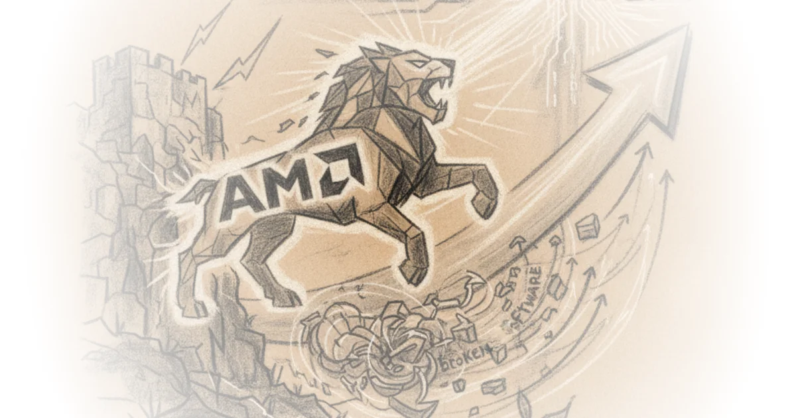
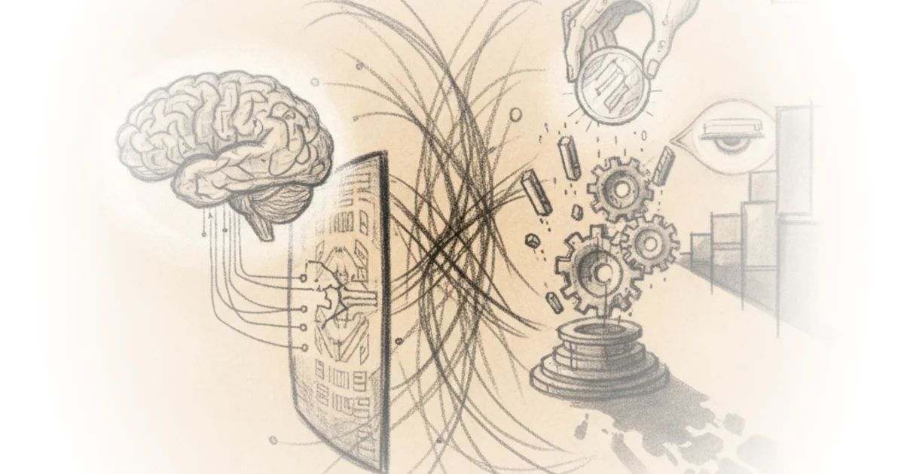
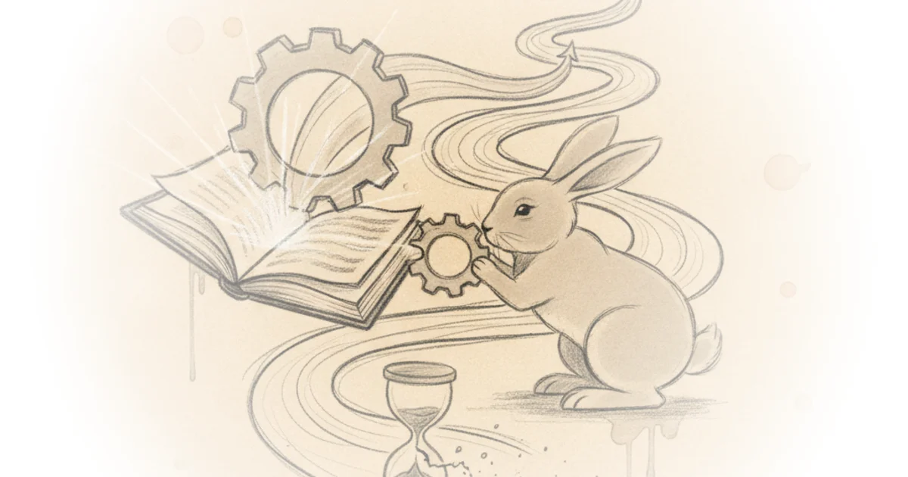
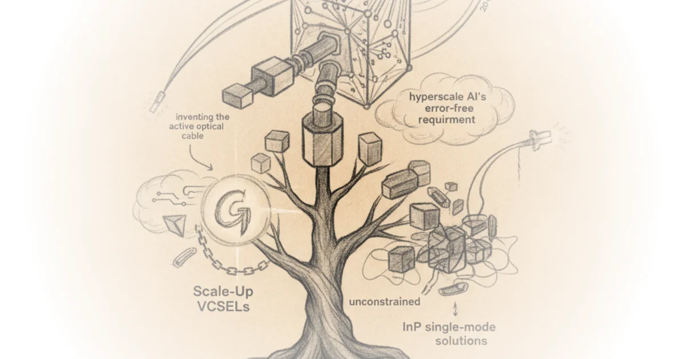

Can Amd break the cuda moat? Amd advancing AI 2026 Dylan Patel · SemiAnalysis ·Jul 24, 2026 · 58 min read · AI & Tech 
WarTalk: Groundhog day in Iran, rogue AI, Ukraine Jordan Schneider · ChinaTalk ·Jul 24, 2026 · 47 min read · AI & Tech
Goodbye slopstack! Also, a $50,000 essay/fiction contest, adversarial consciousness tech, & more Erik Hoel · The Intrinsic Perspective ·Jul 24, 2026 · 11 min read · AI & Tech
AI solipsists and AI cynics Cory Doctorow · Pluralistic ·Jul 24, 2026 · 12 min read · AI & Tech 
Chinese labs' latest product? Roleplay Jordan Schneider · ChinaTalk ·Jul 24, 2026 · 19 min read · AI & Tech
White house’s response to China lacks confidence in America Alberto Romero · The Algorithmic Bridge ·Jul 24, 2026 · 12 min read · AI & Tech
Can we lower construction costs with cheaper labor or materials? Brian Potter · Construction Physics ·Jul 23, 2026 · 15 min read · AI & Tech
Vera rubin NVL72 vs GB200 NVL72? Inference tco & architecture analysis Dylan Patel · SemiAnalysis ·Jul 22, 2026 · 20 min read · AI & Tech
Meta’s infrastructure team needs a culture reset Dylan Patel · SemiAnalysis ·Jul 21, 2026 · 15 min read · AI & Tech
Import AI 465: Open vs closed gaps; kimi k3; demis' big policy plan Jack Clark · Import AI ·Jul 20, 2026 · 12 min read · AI & Tech
Monopoly Round-Up: Video gamers rebel against Sony, Microsoft, and the digital millennium copyright… Matt Stoller · BIG by Matt Stoller ·Jul 19, 2026 · 13 min read · AI & Tech
I wouldn't say pangram is broken, but i would say that it's brittle Freddie deBoer · ·Jul 19, 2026 · 24 min read · AI & Tech
Moonshot is Chinese but its AI models are from another planet Alberto Romero · The Algorithmic Bridge ·Jul 18, 2026 · 14 min read · AI & Tech
Controlling reasoning effort in LLMs Sebastian Raschka · Ahead of AI ·Jul 18, 2026 · 32 min read · AI & Tech
Book review: "Power and progress" Noah Smith · Noahpinion ·Jul 16, 2026 · 36 min read · AI & Tech 
️ PicoJool’s al yuen: The case for GaAs VCSELs in Scale-Up interconnects Various · Chipstrat ·Jul 16, 2026 · 33 min read · AI & Tech 
We tried London's first driverless bus Michael Macleod · London Centric ·Jul 11, 2026 · 12 min read · AI & Tech
Efficient and reasoning AI at the acl 2026 Various · The Kaitchup ·Jul 10, 2026 · 12 min read · AI & Tech
You'll own nothing and be happy: Why it's so hard to break john deere's control over farming Matt Stoller · BIG by Matt Stoller ·Jul 10, 2026 · 15 min read · AI & Tech
"Rights for robots" and the AI slavery fantasy Cory Doctorow · Pluralistic ·Jul 10, 2026 · 11 min read · AI & Tech
Up the stack: How AI’s escape from the commodity trap risks enterprise lock-in Arvind Narayanan & Sayash Kapoor · AI Snake Oil ·Jul 9, 2026 · 28 min read · AI & Tech
The future of Meta superintelligence: A 1 year progress update Dylan Patel · SemiAnalysis ·Jul 9, 2026 · 18 min read · AI & Tech
The teenage millionaire hacker from tower hamlets who took down TfL Michael Macleod · London Centric ·Jul 8, 2026 · 14 min read · AI & Tech
How US states and international trustbusters can beat big tech Cory Doctorow · Pluralistic ·Jul 7, 2026 · 18 min read · AI & Tech